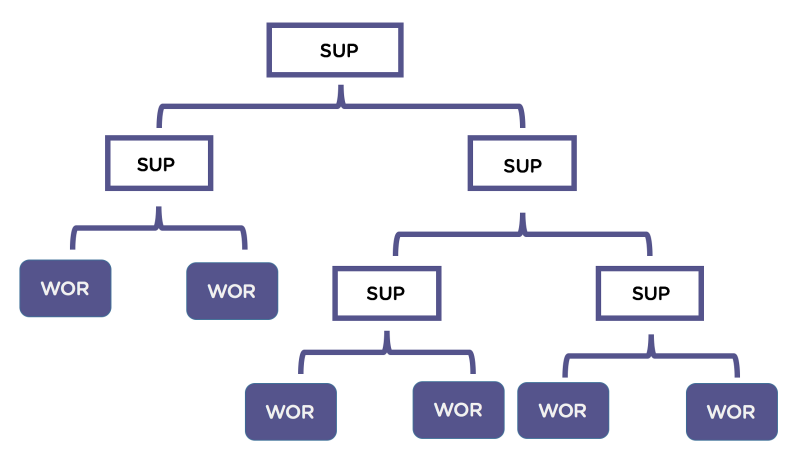

First Steps
First Steps
Notas
Notas
- Requerimientos:
- Elixir > 1.6
- inotify-tools
- Integración por default
- Node (webpack)
- PostgreSQL
Instalación
Instalación
$ mix archive.install hex phx_new 1.5.4 $ mix phx.new demo $ cd demo # configuró la conexión a la base de datos (config/dev.ex) $ mix ecto.setup $ mix phx.server
Entender como funciona
Entender como funciona
Mix
Mix
- Especificacion del proyecto
- Let's see
mix.exs
Application
Application
- Es un concepto similar a "Library", con algunas diferencias.
- Implementa una funcionalidad Especifica
- Un
Applicationpuede seriniciadaydetenida - Es parte de la libreria/especificacion
OTP
OTP (Open Telecom Platform)
OTP (Open Telecom Platform)
- Framework que forma parte de la libreria standart de Erlang.
- Sirve para crear sistemas concurrentes y distribuidos de alta confiabilidad.
- Existen proyectos creados con OTP que alcanzaron la confiabilida de los nine ninths -0.5s de insdisponibilidad en 32 años de funcionamiento.
Resumen funcionamiento OTP
Resumen funcionamiento OTP

Actores (procesos)
Actores (procesos)

Es facil agregar conexión a otras base de datos.
Es facil agregar conexión a otras base de datos.
Demo Time
- Press
pto get help
Revision archivo Demo.Repo
Revision archivo Demo.Repo
defmodule Demo.Repo do
use Ecto.Repo,
otp_app: :demo,
adapter: Ecto.Adapters.Postgres
end
- ¿Comó es que el modulo obtiene información necesaria para conectarse a la base de datos?
- Macros y Metaprogramación.
Metaprogramación
Metaprogramación
- No es solo crear nueva sintaxis dentro del lenguaje.
- Es modificar al lenguaje
- Tomar codigo del lenguaje y hacer algo con este.
Habilita la creacion de DSL's (Domain Specific Languages)
- Presenta conceptos como AST, Hygiene y
__using__
Metaprogramación - DEMO
Metaprogramación - DEMO
iex> require MyMacro iex> MyMacro.say(3+4) iex> MyMacro.say(3*4)
Endpoint
Endpoint
Perfect Match para Web
Perfect Match para Web
Request -> App -> Response
Request -> App -> Response
Funciones
Funciones

Pipe Operator |>
Pipe Operator |>

Pipe Operator |>
Pipe Operator |>
1..500000 |> Enum.map(&(&1*2-20)) |> Enum.filter(&(rem(&1, 3) == 0 || rem(&1, 5) == 0)) |> Enum.take(5)
Plug (Pipe operator para conexiones)
Plug (Pipe operator para conexiones)

Plug is a specification for composable modules in between web applications. It is also an abstraction layer for connection of adapters of different web server.
– Phoenix docs
Let's see lib/demo/lib/endpoint.ex
Let's see lib/demo/lib/endpoint.ex
Plug, Plug, Plug
Hasta que llegamos a plug DemoWeb.Router
Router
Router
- Pipelines
- Scope
- Controllers
MVC
MVC

Diferencias contra MVC tradicional
Diferencias contra MVC tradicional
$ mix phx.gen.html Accounts User users name:string username:string:unique
Controlador
Controlador
- Usa los contextos para obtener información.
- No conoce nada en absoluto sobre los modelos.
- Representa el Web Domain de la applicacion.
- Usa a las vistas para emitir un response
Contextos
Contextos
- Mantra: Phoenix is not your application
- Refuerza la diferencia entre Bussiness domain, Web domain y Model Domain
- Los Contextos son los unicos modulos que son capaces de usar los Modelos
- CAPSTONE REFERENCE
Working with Models
Working with Models
Patron Repository vs ActiveRecord
def update_user(%User{} = user, attrs) do
user
|> User.changeset(attrs)
|> Repo.update()
end
Killer Features/Projects
Killer Features/Projects
Phoenix LiveDashboard
Phoenix LiveDashboard
Phoenix LiveView
Phoenix LiveView

Scaling
Scaling
- Monolith
- Umbrella Project
- Process Communication
- Multiples node
Video Recomendado
Video Recomendado
GOTO 2016 • Phoenix a Web Framework for the New Web • José Valim
Thank You ʕ•ᴥ•ʔ